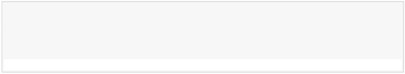
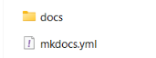
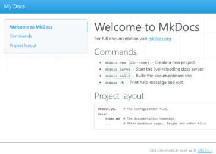
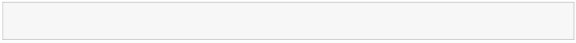
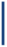

Practica 3
UD01 - Pràctica 4 Curs 2025-2026
Pràctica 3: Mkdocs - Github Pages
Exclamation-circleObjecEn aquestiusta pràctica desplegarem una pàgina web estàtica amb MkDocs a GitHub Pages.
Per això, hauràs de seguir els passos següents:
- Aprendre a utilitzar MarkDown
- Aprendre a utilitzar MkDocs
- Aprendre a utilitzar GitHub Pages
- Desplegar una pàgina web estàtica
Generadors de pàgines estàtiques
En els darrers anys s’han desenvolupat programes d’ordinador que ens permeten de manera senzilla generar llocs web estàtics.
Estan programats en diferents llenguatges que inclouen un motor de plantilles per facilitar la generació del codi HTML.
És fàcil trobar diferents temes (fitxers de fulls d’estil) per canviar l’aspecte de les pàgines generades . L’usuari final només s’ha de preocupar del contingut.
Normalment el contingut s’escriu en un llenguatge de marques senzill com Markdown.
Unavegadageneratelllocestàticnoméshemdedesplegarelllocalnostreservidorenproducció. Tenim molts generadors de pàgines estàtiques: Jekyll, Hugo, Pelican, etc. Pots trobar una llista completa a: Site Generators.
Nosaltres farem servir MkDocs.
Desplegament del nostre lloc web
Una vegada generada la nostra pàgina podem desplegar-la al nostre servidor en producció.
Podem tenir un servidor web propi (que administrem nosaltres), o utilitzar serveis de hosting per implantar les nostres pàgines. En aquest cas farem servir un hosting extern per desplegar la nostra pàgina.
Els serveis moderns per allotjar pàgines estàtiques poden proporcionar mètodes de desplegaments automàticsosemiautomàtics,isolenutilitzarrepositorisgit(l’úsdeservidorsFTPestàdesapareixent). Els hostings que podem fer servir: Netlify, Sorgeix, GitHub Pages, GitLab Pages, render, Firebase, Vercel, Neocities, quantcdn, etc. Nosaltres utilitzarem GitHub Pages.
Alguns d’aquests serveis et permeten de manera automàtica generar-hi la pàgina estàtica (Integració Contínua). A la nostra pràctica no farem servir aquesta característica. La pàgina es genera al nostre ordinador i posteriorment es desplega al hosting extern.
Si ens permet diverses maneres de pujar la pàgina al hosting sempre triarem l’ús de repositori git.
MkDocs
MkDocs és un generador de llocs web estàtics que ens permet crear de manera senzilla un lloc web per documentar un projecte.
El contingut del lloc web està escrit en text pla en format Markdown i es configura amb un únic fitxer de configuració en format YAML.
Themes (fulls d’estil) per a MkDocs
Els temes que s’inclouen per defecte a MkDocs són:
- mkdocs
- readthedocs
És possible utilitzar altres temes desenvolupats per tercers o desenvolupar el nostre propi tema. A la wiki del projecte MkDocs podeu trobar un llistat de tots els themes que hi ha disponibles actualment.
En aquesta pràctica farem servir el theme Material que ha estat desenvolupat per Martin Donath. A la web oficial de Material for MkDocs trobem una guia de referència sobre com utilitzar i configurar el tema.
Comandaments més importants de MkDocs
- Crear un nou projecte (Comanda: new)
1 # crearà la carpeta 'nom_projecte'

2
3 mkdocs new prova 3 INFO - Creating project directory: prova 3 INFO - Writing config file: prova\mkdocs.yml 3 INFO - Writing initial docs: prova\docs\index.md

Figura 1: contingut de la carpeta
- Crear la pàgina web (Comanda: build)
1 # des de la carpeta nom_projecte crearà el lloc web a partir dels

arxius .md ubicats en el directori 'docs'
2
3 mkdocs build 3 INFO - Cleaning site directory 3 INFO - Building documentation to directory: C:\Users\espem\ prova\site 3 INFO - Documentation built in 0.08 seconds - Llançar un servidor web local per comprovar com quedarà la pàgina web abans de publicar-la
(Comanda: serve)
1 # Per defecte se servirà en 'http://127.0.0.1:8000'

2
3 mkdocs serve 3 INFO - Building documentation... 3 INFO - Cleaning site directory 3 INFO - Documentation built in 0.97 seconds 3 INFO - [20:01:45] Watching paths for changes: 'docs', 'mkdocs. yml' 3 INFO - [20:01:45] Serving on http://127.0.0.1:8000/

Figura 2: Visualització en el navegador
– Activa Pages en Github
Publicant el site en Github Pages
1 # Quan estiga activat 'Pages' en Github

1 mkdocs gh-deployExclamation-Triangle Lapleprimergamenta venegPadaagesquea lafacquees els’hadesplecreatgamentcom a gh-pcaldragàesmodificar la branca del des-
- Mostrar les opcions i comandaments a utilitzar amb MkDocs
1 mkdocs -h
Què has de fer?
En aquesta pràctica desplegarem una pàgina web estàtica amb MkDocs i GitHub Pages. Per això, segueix els passos següents:
- Crea un nou projecte de MkDocs al teu ordinador.
- Escriu la documentació del vostre projecte en format Markdown.
- Genera la pàgina web amb MkDocs.
- Crea un repositori al GitHub per al teu projecte.
- Puja la pàgina web a GitHub Pages.
- Comprova que la URL de la teua pàgina web a GitHub Pages funciona correctament.
Què has de lliurar?
Com has desplegat la teua pàgina web a GitHub Pages? La pàgina web es visualitza correctament?
INFO-CIRCLEPràctica 03: Github Pages
Lliurar la documentació de les passes fetes. Incloure la url a la teua pàgina de github.

Referències
Desplegant des de mkdocs IAW - 2ASIX 4/4